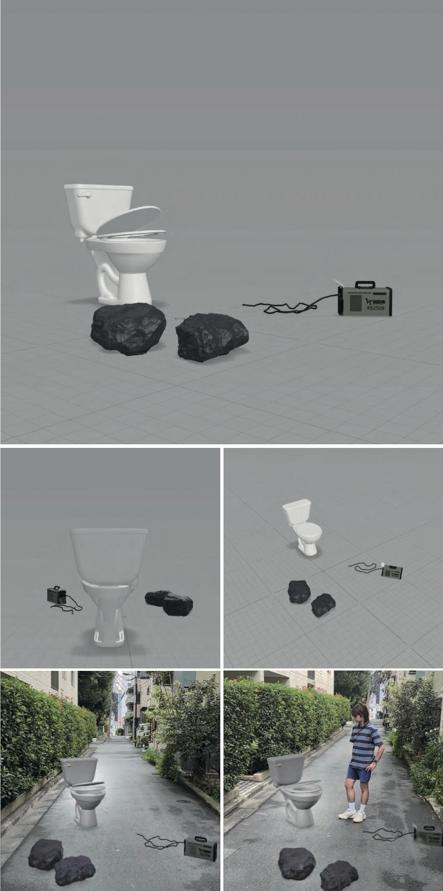
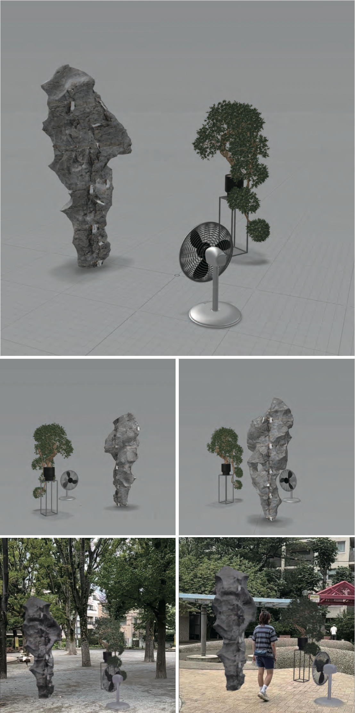
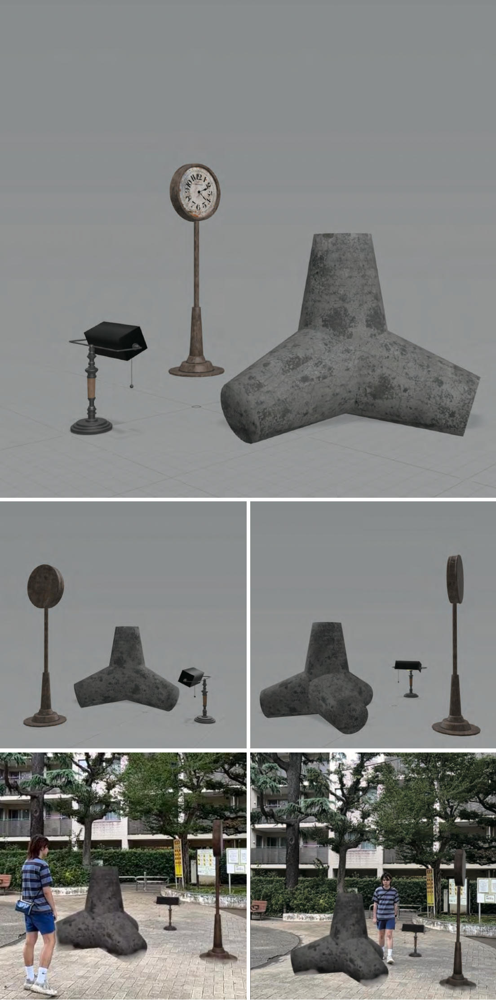
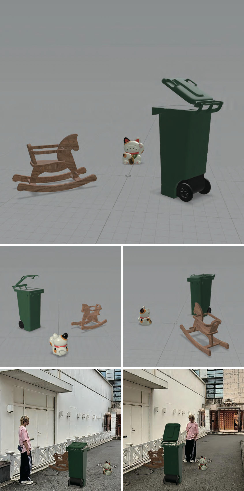
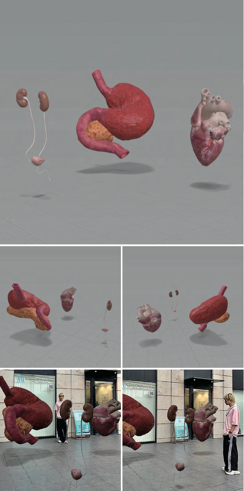

新メディア
TAIWA / 对话 / DIALOGUE
科学探索とAIが急速に発展する時代に、作品は荒誕性によって人々に自身の存在価値と意味を再考させます。AR仮想形式を借り、空間・時間・場所の束縛を打破し、個人が様々な配置シーンを選択できるようにします。
これらの仮想物体は現実の生活の中に存在しながら、現実の空間には存在しない。
第一次産業革命は人類の生産・生活の様式を変革しただけでなく、精神世界にも深刻な衝撃をもたらした。神は死に、人類が新たな創造主となった。AIの急速な台頭により、人類が誇りとする脳・理性・感性はやがて機械に超越され、次の産業革命が訪れようとしている。
決定論は生の荒誕さを露わにする。個々の微小な存在は時代の波に乗り進む。人生の究極の目標は、この世界の中で自己を発見・探求する過程にある。創作者は伝道者のように自らの考えを押しつけるのではなく、より平等な関係の中で「われわれはなぜ存在するのか」という問いを新たに問い直す。
上下スクロールで移動

誕生から文明の発展に至るまで、人間の思想・文化・文明の進歩を推進してきた。中国の茶館はかつて都市の社会的中心として、さまざまな形の対話が生まれ、また終わった場所であった。
作品は特定の見解を表現するのではなく、これらの物体を通じた荒誕無稽さをきっかけに、それぞれが異なる角度から理解を深め、その過程で自己を発見することにある。


人間の交流方式を異なる物体間に適用することで、この対話の中で私たちは観察者として、また参加者としても存在することができます。物体化された私たちは、物体同士の対話に参加することが可能になるのです。
作品の目的は、特定の見解を表現することではなく、これらの物体を通じて、荒唐無稽さをきっかけに、それぞれが作品に対して異なる角度から理解を深める中で、自己を見出すことにあります。この荒唐さは、あなたが仮想の物体について思索するという荒唐さに由来し、自己の種族に属さない対話に参加するという荒唐さ、自らを物体化する荒唐さ、そしてその荒唐さの中で意味を見つけ出せるということ自体の荒唐さを感じ取ることができるでしょう。この作品は、問いかけによってすべてを見直し、クリエイターは、伝道師のように自分の考えを自己満足的に宣伝すべきではない。人々が自分を神聖で特別な存在として自己陶酔するのと同じように、人間中心主義から脱却し、不条理を通して自分自身を発見し、誰もが不条理の中に自分の視点と存在意義を見出している。

私はただの容器だ 人間が用を足すための でも、もし電気がなければ 私は水を流せない もし石がなければ 私はどこに立つべきか 三者は異なる世界に存在する しかし同じ沈黙の中に在る
石・トイレ・電気。これらは日常生活の中に深く根ざしたものでありながら、互いに全く異なる文脈に属している。石は自然の物質として人類の文明以前から存在する。トイレは人間の身体的需要を満たすための道具であり、電気は現代文明の血脈である。もし彼らが対話できるとしたら、その言葉はどんなものだろうか。

no1.jpgこれは過去形の叙述である。偽山と盆栽は中国江南の伝統的な庭園の典型的な要素を代表している。「樹は静かにしたいが、風は止まない」という言葉において、樹は客観的な存在を象徴し、風は流れ続ける時間を表す。電動扇風機のそよ風は、歳月とともに散り散りになった偽山と盆栽を吹き抜ける。かつては中国貴族に最も愛された装飾品であったが、旧時の貴族が消滅した後に破壊され、今は歴史の宝として再評価されている。これは時間と空間の対話であり、静かに失われた価値の再認識を促している。

no2.jpg時計・スタンドライト・消波ブロック。これらは三つの全く異なるシーンのアイテムであるが、いずれも人間と客観的な世界との媒介者である。私たちは波の侵害を抵抗するために消波ブロックが必要であり、夜の訪れを抵抗するためにランプが必要であり、私たちの尺度を測るために時間が必要である。これら三つのアイテムは異なる空間に存在したが、同じ価値を持っているように見える。しかし、もしこれらのものが使用のコンテキストから完全に取り除かれたら、その意味はどこへ行くのだろうか。

no3.jpg迷いそのものが 真に捨てられるのではなく 人類自身である 欲望が消え、想像力が消え 逃避する能力が消えた後 私は何を収めるのか
これらの物体は人類の感情の派生物である。招き猫は人類の欲望の象徴であり、その意味は人類によって創られた。おもちゃは人類の想像力と現実世界を結ぶ媒介であり、夢と現実をつなぐ役を演じる。ゴミ箱は人類の捨てられたものへの態度を担い、精神の避難所となっている。欲望・想像力・逃避の能力が全て消えた後、これらの物体は自身の存在境地をどう見るのだろうか。

no4.jpg人間は本質的に細胞が集合した融合体であり、器官の存在は意識を維持するためのものである。これは人間が実は肉体に寄生しているということを意味する。もし器官が人間から独立して存在し、自身の役割に戻ることができるならば、彼らも自我と個性を持つだろう。そうなれば、彼らの間にはどのような対話が生まれるのだろうか。

no5.jpg